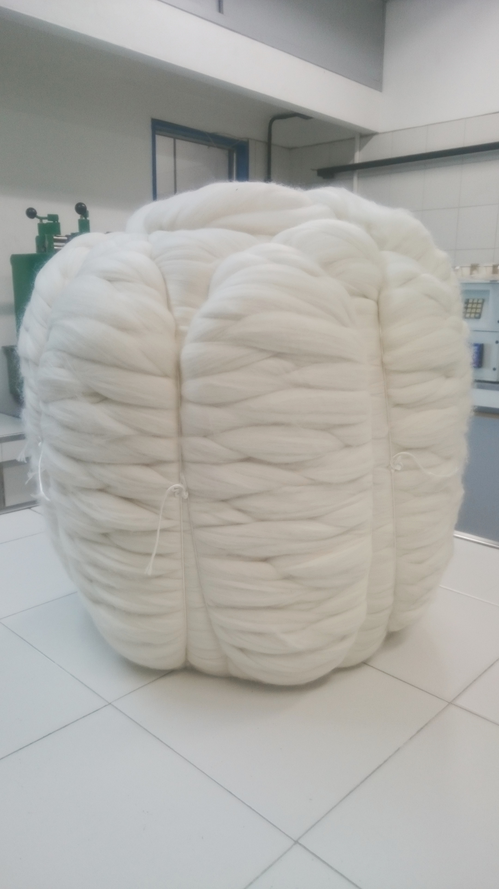

Una vez que la barraca clasifica el producto en lotes, se envía a la planta de peinado para su proceso


En la planta de peinado los lotes son puestos a disposición del lavadero. Por su naturaleza grasa, los vellones retienen el polvo y residuos vegetales hasta un 40% de su peso. En los baños sucesivos de lavado, se adiciona en las primeras bateas detergente biodegradable usando un procedimiento de reflujo en contracorriente para el ahorro de agua y detergente; luego de las bateas de lavado se procede al enjuague de la lana también con un mecanismo de re-circularización. Una vez terminado el lavado el manto de lana lavada es introducido al secadero, el cual mediante calentadores a gas se va secando mientras avanza por el mismo.
La planta cuenta con un laboratorista por turnos las 24hs del día, encargado de chequear que el producto se encuentre bajo los estándares de calidad fijados para el lote durante todo el proceso. Se realizan muestras de todos los lotes, las cuales se analizan a la salida del secadero para verificar el porcentaje de humedad que contiene como así también el contenido graso.


Una de las cosas que se recupera como subproducto del lavado es la grasa de lana.Esta grasa que es exportada en más de un 90% es reprocesada por nuestros clientes para la obtención de la lanolina de uso en la industria farmacéutica, tinturas, curtiembre, etc
La sección de cardado tiene múltiples objetivos: Desenredar progresivamente las mechas de lana constituidas por fibras entrelazadas y aglomeradas, para obtener fibras individuales y aisladas. Despojar la lana de las impurezas vegetales o minerales no eliminadas en el lavado (los cardos). Disponer regularmente las fibras aisladas en forma de un velo que será condensado bajo la forma de mecha continua, o cinta de carda, la cual constituye el primer esbozo del futuro hilo.


Las fibras que componen la cinta a la salida de la carda no están alineadas rigurosamente, algunas están todavía enredadas, por lo cual antes de poder peinar el producto se debe paralelizar y enderezar las fibras para poder peinar. El peinado tiene por objeto procesar las mechas de fibras producidas por las cardas de tal forma que una vez que salga de esta etapa se encuentre libre de todas las fibras cortas e impurezas diversas que todavía quedaban en el producto.
En la seccion Terminacion el objetivo es regularizar las cintas para que puedan ser presentadas en un peso determinado y con una forma determinada, y comprende por lo general dos pasos de gill: el paso de “vaciatachos” donde se restablece el escalonamiento de las fibras el paso “finisor” donde se termina de procesar en las presentaciones que llegan a los clientes, La cinta embalada denominada TOPS se puede presentar como bobina o bien como bote prensado conocidos como BUMPS

Las distintas bobinas y bumps son dispuestos en carros que serán procesados en la sección de prensas, aquí se embalan en fardos para su despacho final al cliente. La planta cuenta con 2 prensas, una para armar los fardos de 400mm y otra para los fardos con bumps de 800mm.